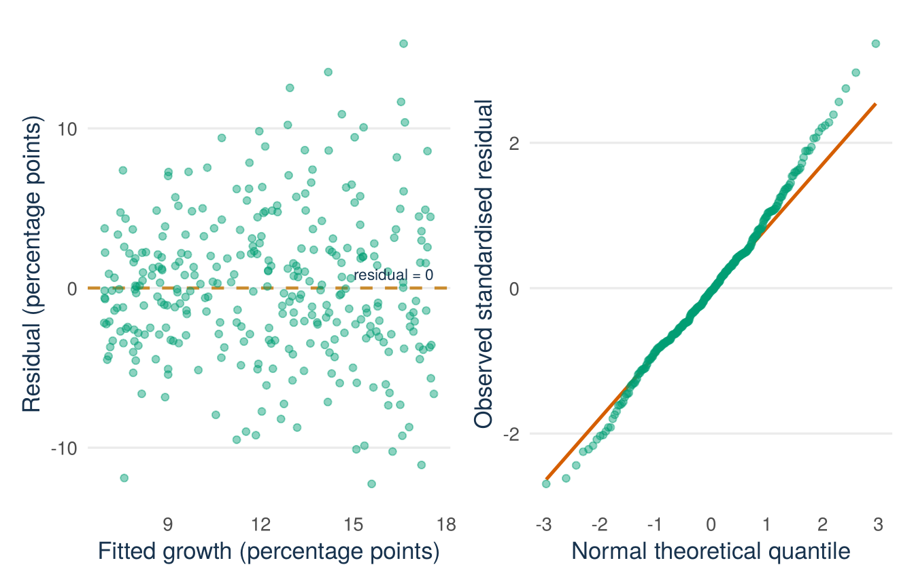

set.seed(734)
n_mock <- 320
marketing_10k <- round(runif(n_mock, 0.25, 8), 2)
experience_years <- sample(0:18, n_mock, replace = TRUE)
team_size <- sample(
1:10, n_mock, replace = TRUE,
prob = c(8, 16, 20, 20, 14, 9, 6, 4, 2, 1)
)
digital <- factor(
ifelse(runif(n_mock) < 0.45, "Yes", "No"),
levels = c("No", "Yes")
)
spend_c <- marketing_10k - 4
growth_mean <-
8 + 1.10 * spend_c + 3 * (digital == "Yes") -
0.10 * spend_c^2 + 0.30 * experience_years +
0.70 * spend_c * (digital == "Yes") + 0.20 * team_size
growth_pct <- round(
growth_mean + rnorm(n_mock, 0, 2.5 + 0.40 * marketing_10k),
2
)
ventures <- data.frame(
growth_pct, marketing_10k, experience_years, team_size, digital, spend_c
)
simple_model <- lm(growth_pct ~ marketing_10k, data = ventures)
multiple_model <- lm(
growth_pct ~ marketing_10k + experience_years + team_size + digital,
data = ventures
)
additive_model <- lm(
growth_pct ~ spend_c + digital + experience_years,
data = ventures
)
extended_model <- lm(
growth_pct ~ spend_c * digital + I(spend_c^2) + experience_years,
data = ventures
)Mock Exam: QM Intermediate
This mock exam covers all six lectures of the course. It has 100 points, so the exam grade is
\[ \text{grade} = \frac{\text{points earned}}{10}. \]
The Intermediate exam is taken in TestVision, with R available. The practice exam in TestVision appears in your own TestVision account once it is published. You log in with your university account. There is no separate link. General information about TestVision for students is on the university page about TestVision.
The QM Intermediate Code Sheet is provided at the exam. Use it to review the R commands and the formulas before you try this mock exam.
Unless a question says otherwise, use a 5% significance level. Interpret every coefficient in the units and for the sample defined below. Do not use causal language unless the way the data were produced supports it.
| Question | Topic | Points |
|---|---|---|
| 1 | Simple regression and least squares | 20 |
| 2 | Assumptions and diagnostics | 20 |
| 3 | Model fit and the overall F-test | 20 |
| 4 | Multiple regression and a dummy predictor | 20 |
| 5 | Interactions, curvature, and a partial F-test | 20 |
| Total | 100 |
Dataset used throughout
The exam dataset is simulated. Treat it as a simple random sample of 320 independent young ventures from a business registry. One row is one venture. The data are observational: none of the predictors was assigned by chance.
growth_pct: change in annual sales, in percentage pointsmarketing_10k: annual marketing spending, in €10,000sexperience_years: prior industry experience of the lead founder, in yearsteam_size: number of current team membersdigital:Nofor a mainly physical offering andYesfor a mainly digital offering.Nois the reference categoryspend_c = marketing_10k - 4: marketing spending centred at €40,000.
The population is the set of ventures in this registry. Later survival and market conditions are not measured.
The dataset is simulated with a fixed seed, so you can reproduce every printed result on this page exactly. The code below generates the data and fits the four models used in the questions:
Download qm-intermediate-mock-exam.csv, save it in your R project, and load it with:
ventures <- read.csv("qm-intermediate-mock-exam.csv")
ventures$digital <- factor(ventures$digital, levels = c("No", "Yes"))The printed results below let you continue if R is not available for a moment. When you practise with a time limit, reproduce them from the downloaded file.
Question 1: Simple regression and least squares (20 points)
The first model is
simple_model <- lm(growth_pct ~ marketing_10k, data = ventures)and R reports
Coefficients:
Estimate Std. Error t value Pr(>|t|)
(Intercept) 6.60 0.52 12.72 <2e-16
marketing_10k 1.38 0.11 12.35 <2e-16
Residual standard error: 4.57 on 318 degrees of freedom
Multiple R-squared: 0.324- Write the fitted regression equation with units. (3 points)
- Interpret the slope and intercept in context. Comment on whether the intercept has a useful meaning here. (6 points)
- Calculate the fitted growth for a venture spending €30,000 on marketing. If its observed growth is 15 percentage points, calculate its residual and interpret the sign. (5 points)
- Explain what least squares minimises and why residuals are squared rather than simply summed. (4 points)
- State the observational unit and why the fitted slope is not automatically causal. (2 points)
Model answer and marking guide
- \(\widehat{growth\_pct}=6.60+1.38\,marketing\_10k\), where the outcome is in percentage points and the predictor in €10,000s (3 points).
- For each additional €10,000 of marketing spending, fitted annual sales growth is 1.38 percentage points higher among sampled ventures (3 points). At zero marketing spending, fitted growth is 6.60 percentage points (2 points). This intercept is useful only if zero lies in or near the observed spending range and defines a meaningful venture (1 point).
- €30,000 gives
marketing_10k = 3, so the fitted value is \(6.60+1.38(3)=10.74\) percentage points (3 points). The residual is \(15-10.74=4.26\) percentage points. Positive means observed growth exceeds the model’s fitted value (2 points). - Least squares chooses the coefficients that minimise the sum of squared residuals, \(\sum_i(y_i-\hat y_i)^2\) (2 points). Residuals that are not squared cancel: with an intercept, the positive and negative residuals sum to zero. Squaring also counts large misses more heavily (2 points).
- The unit is one venture (1 point). An association in observational data can come from confounding, reverse causality, selection, or measurement error (1 point).
Question 2: Assumptions and diagnostics (20 points)
R produced the following diagnostics for lm(growth_pct ~ marketing_10k, data = ventures). In the left panel, each point has fitted growth on the horizontal axis and its residual on the vertical axis. In the right panel, observed standardised residuals are plotted against theoretical standard-normal quantiles. A normal pattern would follow the straight reference line.
See the R code for this figure
library(ggplot2)
library(patchwork)
# Rebuilds the same ventures dataset as the visible chunk above (same seed).
set.seed(734)
n_mock <- 320
marketing_10k <- round(runif(n_mock, 0.25, 8), 2)
experience_years <- sample(0:18, n_mock, replace = TRUE)
team_size <- sample(
1:10, n_mock, replace = TRUE,
prob = c(8, 16, 20, 20, 14, 9, 6, 4, 2, 1)
)
digital <- factor(
ifelse(runif(n_mock) < 0.45, "Yes", "No"),
levels = c("No", "Yes")
)
spend_c <- marketing_10k - 4
growth_mean <-
8 + 1.10 * spend_c + 3 * (digital == "Yes") -
0.10 * spend_c^2 + 0.30 * experience_years +
0.70 * spend_c * (digital == "Yes") + 0.20 * team_size
growth_pct <- round(
growth_mean + rnorm(n_mock, 0, 2.5 + 0.40 * marketing_10k),
2
)
ventures <- data.frame(
growth_pct, marketing_10k, experience_years, team_size, digital, spend_c
)
simple_model <- lm(growth_pct ~ marketing_10k, data = ventures)
resid_df <- data.frame(
fitted = fitted(simple_model),
residual = residuals(simple_model)
)
qq_df <- data.frame(rs = rstandard(simple_model))
theme_mock <- theme_minimal(base_size = 13) +
theme(
panel.grid.minor = element_blank(),
panel.grid.major.x = element_blank(),
plot.caption = element_text(colour = "#5B6976"),
axis.title = element_text(colour = "#17324D")
)
p_resid <- ggplot(resid_df, aes(x = fitted, y = residual)) +
geom_hline(yintercept = 0, colour = "#C98B2E",
linetype = "dashed", linewidth = 0.8) +
geom_point(alpha = 0.45, size = 1.6, colour = "#009E73") +
annotate("text", x = max(resid_df$fitted), y = 0,
label = "residual = 0", hjust = 1, vjust = -0.7,
colour = "#17324D", size = 3) +
labs(x = "Fitted growth (percentage points)",
y = "Residual (percentage points)") +
theme_mock
p_qq <- ggplot(qq_df, aes(sample = rs)) +
geom_qq_line(colour = "#D55E00", linewidth = 0.9) +
geom_qq(colour = "#009E73", alpha = 0.45, size = 1.6) +
labs(x = "Normal theoretical quantile",
y = "Observed standardised residual") +
theme_mock
p_resid + p_qq
- Read both axes of the residual-versus-fitted panel and explain what a point above zero represents. (4 points)
- What pattern do you see in that panel? Name the assumption it challenges. (4 points)
- Explain how to read the Q–Q plot and assess normality here. (4 points)
- Name two regression assumptions that these plots cannot establish, and state what information would help assess each. (4 points)
- Would heteroskedasticity-robust standard errors repair a curved conditional mean or make the slope causal? Explain. (4 points)
Model answer and marking guide
- The horizontal axis is model-fitted growth. The vertical axis is observed-minus-fitted growth, both in percentage points (2 points). A point above zero is a venture whose observed growth is higher than its fitted growth (2 points).
- Vertical spread increases with fitted growth, creating a fan shape (2 points). This challenges constant conditional variance (homoskedasticity) (2 points).
- The Q–Q plot compares ordered residuals with values expected under a normal distribution. Agreement appears as points near the line (2 points). The middle is reasonably aligned but tail departures suggest imperfect normality and possible extreme residuals (2 points).
- Examples. Independence: you need to know whether ventures are clustered, observed more than once, or sampled in a particular order. No confounding: you need knowledge of how the data came about and of relevant variables that are not in the model. Correct measurement: you need information about how the variables were recorded. (2 points for each valid assumption with the information that would help, maximum 4.)
- Robust standard errors give better estimates of the uncertainty in large samples when the error variance is not constant (2 points). They do not change the fitted conditional mean, they do not repair a curve that the model leaves out, they do not remove confounding, and they do not make a coefficient from observational data causal (2 points).
Question 3: Model fit and the overall F-test (20 points)
The researcher next fits
multiple_model <- lm(
growth_pct ~ marketing_10k + experience_years + team_size + digital,
data = ventures
)R reports:
Residual standard error: 4.09 on 315 degrees of freedom
Multiple R-squared: 0.464, Adjusted R-squared: 0.457
F-statistic: 68.10 on 4 and 315 DF, p-value: < 2.2e-16For the intercept-only model, SST = 9,831.91. For multiple_model, SSE = 5,272.57.
- Verify \(R^2\) from SST and SSE. Interpret it precisely. (6 points)
- Explain why adjusted \(R^2\) is lower than \(R^2\), and when adjusted \(R^2\) is useful. (4 points)
- State the null and alternative hypotheses of the reported overall F-test. Give its conclusion. (6 points)
- Explain why this F-test is not equivalent to four separate 5% t-tests. (2 points)
- Does \(R^2=0.464\) show that the model predicts future ventures well? Explain briefly. (2 points)
Model answer and marking guide
- \(R^2=1-5272.57/9831.91\approx0.464\) (3 points). The fitted values explain 46.4% of the observed sample variation in sales-growth percentage points. It is not a percentage of correct predictions (3 points).
- Adjusted \(R^2\) contains a penalty for every predictor in the model, and it can fall when a term adds little to the fit (2 points). It helps to compare models with different numbers of predictors that are fitted to the same outcome and the same observations (2 points).
- \(H_0:\beta_{marketing}=\beta_{experience}=\beta_{team}=\beta_{digital}=0\) against the alternative that at least one of them is not zero (3 points). The p-value is far below 0.05, so reject \(H_0\): the model with four predictors fits better than a model with only an intercept, if the assumptions of the test hold (3 points).
- The F-test is one joint test of all four coefficients together. Four separate t-tests answer four single questions. A set of terms can be jointly useful even when no single t-test rejects (2 points).
- No. \(R^2\) measures the fit in this sample only. To judge predictions for future ventures, the model must be checked on new data that were not used to fit it (2 points).
Question 4: Multiple regression and a dummy predictor (20 points)
The coefficient table below comes from lm(growth_pct ~ marketing_10k + experience_years + team_size + digital, data = ventures). The reference category for digital is No.
Estimate Std. Error t value Pr(>|t|)
(Intercept) 2.45 0.77 3.18 0.002
marketing_10k 1.34 0.10 13.40 <0.001
experience_years 0.26 0.04 6.23 <0.001
team_size 0.17 0.10 1.63 0.104
digitalYes 3.08 0.46 6.67 <0.001- Interpret
marketing_10k, including the predictor step, outcome unit, held-fixed variables, and sample. (5 points) - Interpret
digitalYesand name its reference category. (4 points) - Compare two otherwise identical ventures: A spends €20,000 on marketing, has 5 years of founder experience, a team of 4, and
digital = No. B has the same values except it spends €40,000 and hasdigital = Yes. Calculate B’s fitted growth minus A’s. (5 points) - Test \(H_0:\beta_{team\_size}=0\) against a two-sided alternative and give a careful conclusion. (3 points)
- Explain why including controls does not by itself give the marketing or digital coefficients a causal interpretation. (3 points)
Model answer and marking guide
- Among sampled registry ventures, an additional €10,000 in annual marketing spending is associated with 1.34 percentage points higher fitted sales growth, holding founder experience, team size, and offering type fixed (5 points).
- At equal marketing spending, experience, and team size, primarily digital ventures have fitted growth 3.08 percentage points higher than primarily physical ventures.
Nois the reference (4 points). - The spending change is two units, contributing \(2(1.34)=2.68\). Changing from
NotoYescontributes 3.08. The fitted difference is \(2.68+3.08=5.76\) percentage points (5 points). - \(t=1.63\), \(p=0.104>0.05\), so do not reject \(H_0\). The data do not show an association between team size and growth, holding the other predictors fixed. This does not prove that the coefficient is zero (3 points).
- Controls adjust only for variables that are measured and included in the model. Unmeasured confounders, reverse causality, selection, and measurement error can remain in these observational data (3 points).
Question 5: Interactions, curvature, and a partial F-test (20 points)
The researcher fits the extended model
extended_model <- lm(
growth_pct ~ spend_c * digital + I(spend_c^2) + experience_years,
data = ventures
)with estimates:
Estimate
(Intercept) 9.20
spend_c 1.04
digitalYes 2.96
I(spend_c^2) -0.11
experience_years 0.24
spend_c:digitalYes 0.68The partial comparison with the additive linear model reports:
Analysis of Variance Table
Model 1: growth_pct ~ spend_c + digital + experience_years
Model 2: growth_pct ~ spend_c * digital + I(spend_c^2) + experience_years
Res.Df RSS Df Sum of Sq F Pr(>F)
1 316 5317.0
2 314 5053.8 2 263.23 8.18 0.00035- At €40,000 of marketing spending (
spend_c = 0), give the fitted spending slope for each offering type and the fittedYes–Nodifference. (6 points) - At €60,000 (
spend_c = 2), calculate the fittedYes–Nodifference. (3 points) - For a physical-offering venture, calculate the fitted change when spending rises from €60,000 (
spend_c = 2) to €70,000 (spend_c = 3), holding experience fixed. Repeat for a digital venture. (5 points) - State the hypotheses and conclusion of the partial F-test. (4 points)
- State the hierarchy rule and one reason not to extrapolate this quadratic far beyond the observed spending range. (2 points)
Model answer and marking guide
- At
spend_c = 0, the physical-offering slope is 1.04 percentage points per €10,000 and the digital slope is \(1.04+0.68=1.72\) (2 points each). The fitted digital-minus-physical difference is 2.96 percentage points (2 points). The slopes 1.04 and 1.72 are the slopes of the two curves exactly atspend_c = 0. The fitted change fromspend_c = 0tospend_c = 1is \(1.04-0.11=0.93\) for physical and \(0.93+0.68=1.61\) for digital offerings. Either pair earns the points if the reasoning is shown. - The group difference is \(2.96+0.68(2)=4.32\) percentage points (3 points).
- For physical offerings, the change from 2 to 3 is \(1.04(1)-0.11(3^2-2^2)=1.04-0.55=0.49\) percentage points (2 points). For digital offerings, add the interaction change of 0.68, so the fitted change is 1.17 percentage points (2 points). Units and the held-fixed experience condition earn 1 point.
- \(H_0:\beta_{spend\times digital}=\beta_{spend^2}=0\) against the alternative that at least one of the two is not zero (2 points). Since \(p=0.00035<0.05\), reject \(H_0\): the two added terms are jointly useful beyond the additive linear model, if the assumptions of the test hold (2 points).
- Keep
spend_canddigitalin the model when their interaction or the square ofspend_cis in it (1 point). A quadratic curve can turn sharply and give unrealistic values outside the observed range (1 point).
The points of the five questions sum to 100. Do the mock exam in R before you open the answers. Use the marking guide to check your calculations, and also your units, reference groups, statements about what is held fixed, uncertainty, and the limits of causal claims.